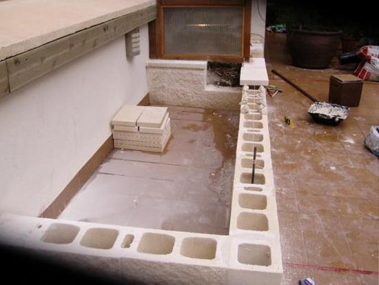
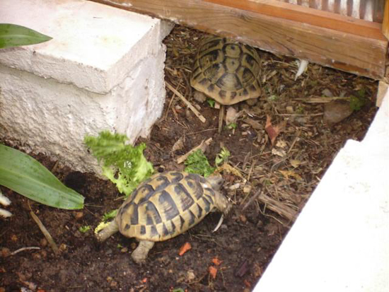

|
CONSTRUCCI�N DE UNA
JARDINERA-INVERNADERO PARA TORTUGAS TERRESTRES
Counyat, 2006
A
la hora de construir las instalaciones tendremos en cuenta tanto el n�mero
de animales como el tama�o final que llegaran a alcanzar en su estado
adulto. En el siguiente reportaje fotogr�fico ver�is la construcci�n
desde su inicio como jardinera al aire libre hasta su posterior
transformaci�n en invernadero.
Las
dimensiones de la jardinera son 2 metros de largo por 1 metro de
ancho, con una altura de dos bloques de hormig�n blanco, lo cual supone
unos 40 cm. de altura, que ser� exactamente la altura del sustrato que
tendr�n. Tras construir el per�metro de la jardinera, lo siguiente es
aislar el suelo de la humedad por medio de tela asf�ltica y,
seguidamente, facilitar el drenaje con Arlita (arcilla expandida en
bolas de aproximadamente 1 cm de grosor) que se utiliza principalmente
en construcci�n.
Aqu� comienza la reconversi�n de la jardinera. Los materiales
utilizados ser�n �nicamente madera para la construcci�n de toda la
estructura, metacrilato para el lateral derecho y la parte superior y
cristal para la parte frontal y puertas de acceso, permitiendo as� la
visibilidad total del recinto.
SEGUNDA PARTE - AMPLIACI�N
Se ha a�adido una nueva jardinera al
invernadero, de forma que quedan comunicadas. Muy �til en a principios
de primavera y finales de oto�o. En verano el invernadero se desmonta
totalmente quedando todo al aire libre.


|